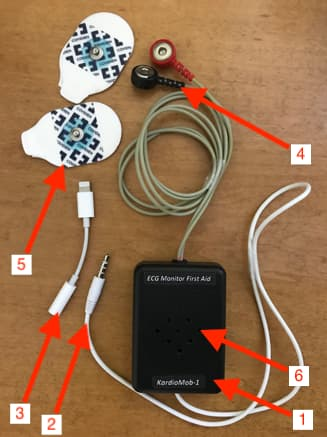

type: section
page: Device
lang: en
title: Characteristics
id: 4
Device and characteristics "KardioMob"
- Box Enclosure
- Cable for connecting to a smartphone or tablet with a headphone jack
- Cable - adapter for connecting the ECG of the Monitor to the connector for charging a smartphone
- Electrode cable with push-button connectors for connecting to ECG electrodes
- Solid gel ECG electrodes
- Holes on the body of the ECG monitor for audio output

Size: 70 x 50 x 20 mm
Weight: 60 gr.
Power: 3V CR2032 battery
In the "First Aid" option, the battery life is at least 400 hours. When monitoring cardio arrhythmias, the number of ECG recordings and transmissions is at least 30 thousand.
The remaining specifications comply with Russian and international standards for ambulatory ECG monitors.